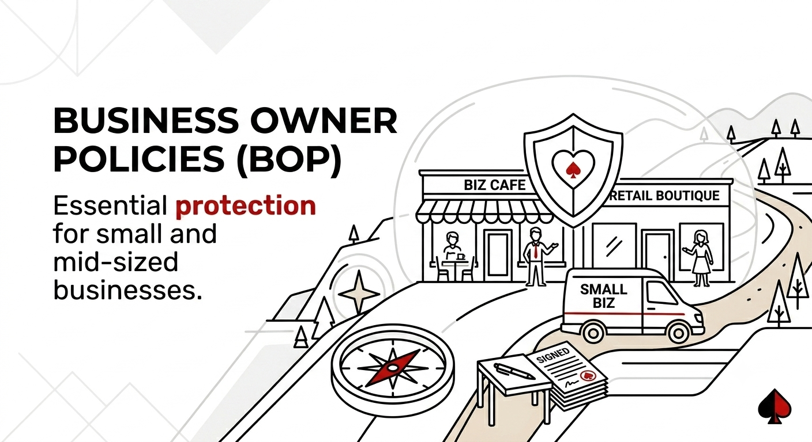

Business Owners Policy (BOP)
Comprehensive protection for small and mid-sized businesses.

Comprehensive protection for small and mid-sized businesses.

A Business Owners Policy (BOP) combines General Liability and Commercial Property into one convenient, cost‑effective package designed for small and mid‑sized businesses.
BOPs are ideal for small and mid‑sized businesses such as retail shops, offices, restaurants, and service providers.
No. Workers Compensation must be purchased separately.